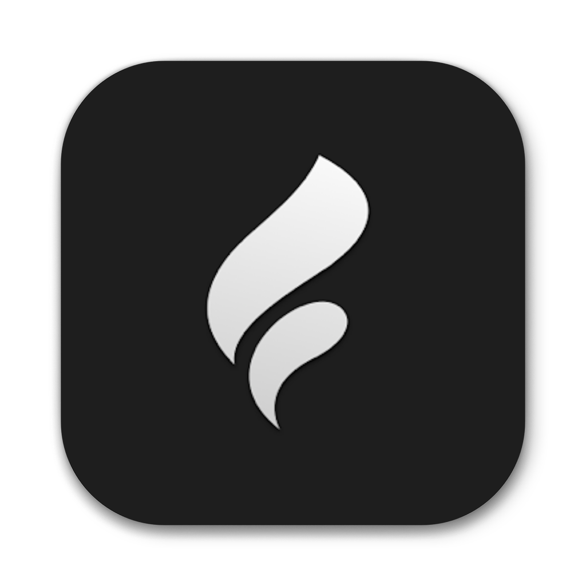
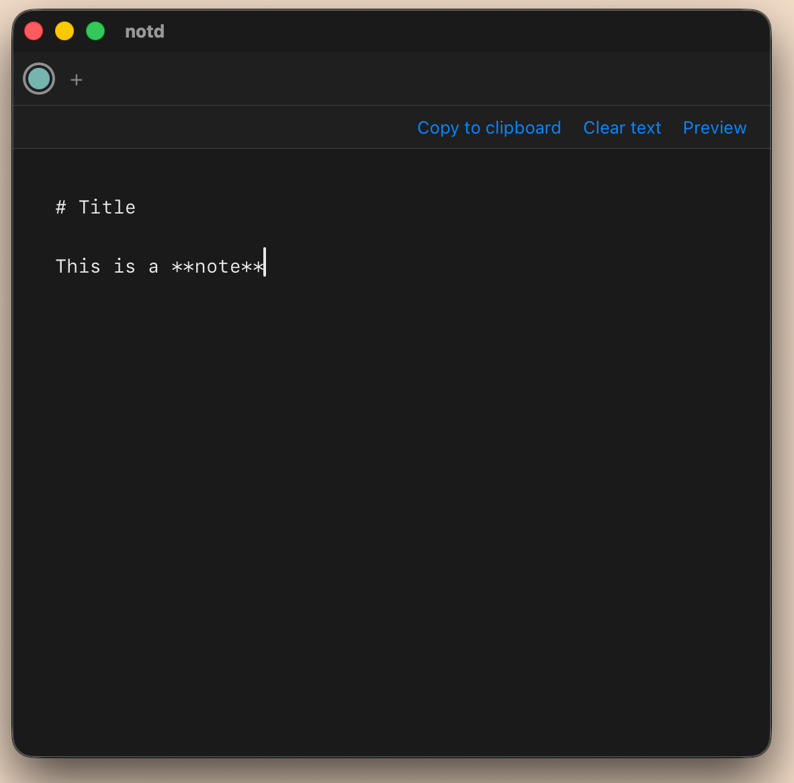

notd
A capture buffer for ephemeral text drafts.

What it's for
A personal drafts app where unformed ideas and todos land first. Capture quickly here; promote the keepers to Obsidian for notes you'll revisit, or Todoist for tasks you'll act on. Anything left in notd is provisional by design.
Why
-
Plain files, your folder.
Each note is one
.mdfile. Point notd at a Dropbox folder and your drafts sync between machines without ceremony. - Dots, not filenames. Notes are represented by colored dots, ordered oldest to newest. Filenames and dates never appear in the UI — only the text that matters.
- One window. Nothing to tune. No tabs, no sidebar, no command palette, no themes. Light or dark follows the system. Cmd+N, Cmd+E, Cmd+, — that's it.
- Empty deletes itself. Clear a note's text and the dot disappears. Nothing to file, nothing to archive, nothing to keep tidy.
Get it
Built with Tauri 2 and Svelte. Requires macOS 11 or later.
git clone https://github.com/minac/notd
cd notd
./run.sh buildThe script builds the app and installs it into /Applications.
How it works
One folder, one Markdown file per note, plus a hidden .notd-meta.json sidecar that owns dot order and color assignment so they stay consistent across synced devices.